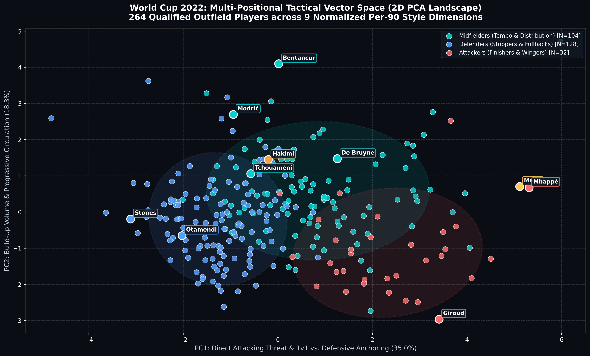

Live Scouting Query Engine
Search any of the 264 tournament players or click quick presets to compute instant cosine twins.
Player Discovery Console
Top 5 Statistical Twins (Ranked by Cosine Similarity)
Head-to-Head Per-90 Profile Breakdown Blue = Target Player | Green = Comparison Twin
Mathematical Architecture
Why Euclidean distance fails in scouting and why Cosine orientation excels.
1. The Volume Trap & Normalization
Raw counts in sports data are heavily corrupted by playing time and team dominance. A player in a ball-dominant team (e.g., Spain with 75% possession) records artificially inflated passing numbers compared to an identical midfielder playing for a counter-attacking side.
RobustScaler using the interquartile range (IQR) to neutralize extreme
tactical unicorns without distorting the underlying distribution variance.
2. Cosine Metric Space Formulation
Euclidean distance calculates spatial magnitude distance ($\|\mathbf{u} - \mathbf{v}\|_2$). Consequently, a young prospect who plays only 220 minutes appears far away from a 700-minute veteran even when their playing styles are identical.
Tactical Scouting Case Studies
Real-world deployment scenarios evaluating elite World Cup 2022 archetypes.
The Luka Modrić Successor Dilemma
Scouting Objective: Identify a creative central playmaker capable of progressing play under extreme defensive pressure while maintaining defensive work rate. Modrić generated 14.05 progressive passes/90 and 1.92 interceptions/90 at age 37 across 705 tournament minutes.

Cosine Similarity Ranking
Lovro Majer (97.4%) and Christian Eriksen (96.7%) emerge as the closest statistical twins, sharing high pass progression and spatial composure under press.

Modrić vs Lovro Majer Comparison
Direct comparison confirms near-identical offensive and ball recovery shapes. Majer delivers slightly higher shot volume (1.52 vs 0.89), validating him as a natural tactical successor.
Global Tactical Constellation (2D PCA Space)
Macro Topological Analysis: Dimensionality reduction of all 264 players onto principal components reveals distinct tactical clusters: Defending anchors cluster in the negative quadrant, creative mid-tier controllers occupy the center-right corridor, and explosive wide attackers form an outer peripheral shell.

264-Player Tactical Universe Map
Highlights tactical outliers (Mbappé, Messi, Laporte) separated from standard positional centroids.
Production Module & CLI Specification
Fully decoupled, testable Python engine ready for CI/CD pipelines and automated reporting.
# Terminal execution: Query player twins with automated 300-DPI visual exports python src/models/player_similarity.py \ --player "Luka Modric" \ --top-n 5 \ --same-position \ --min-minutes 200 \ --save-plots # Output: # [SUCCESS] Target Player: Luka Modrić (Croatia | Right Center Midfield) # -------------------------------------------------------------------------- # Rank 1: Lovro Majer (Croatia) - Cosine Similarity: 0.9740 # Rank 2: Christian Eriksen (Denmark) - Cosine Similarity: 0.9673 # Rank 3: Adrien Rabiot (France) - Cosine Similarity: 0.9412 # Rank 4: André-Frank Zambo Anguissa(Cameroon) - Cosine Similarity: 0.9389 # Rank 5: Pierre-Emile Højbjerg (Denmark) - Cosine Similarity: 0.9351 # [EXPORT] Saved high-res report to reports/figures/player_similarity_modric.png
from src.models.player_similarity import PlayerSimilarityEngine # Initialize engine with cached World Cup 2022 feature vectors engine = PlayerSimilarityEngine(data_path="data/processed/fifa_world_cup_2022/players_features.parquet") # Execute similarity search target, matches = engine.find_similar( player_name="Luka Modric", top_n=5, same_position=True ) # Generate tactical comparisons engine.plot_head_to_head(target, matches.iloc[0], save_path="reports/figures/modric_vs_majer.png")